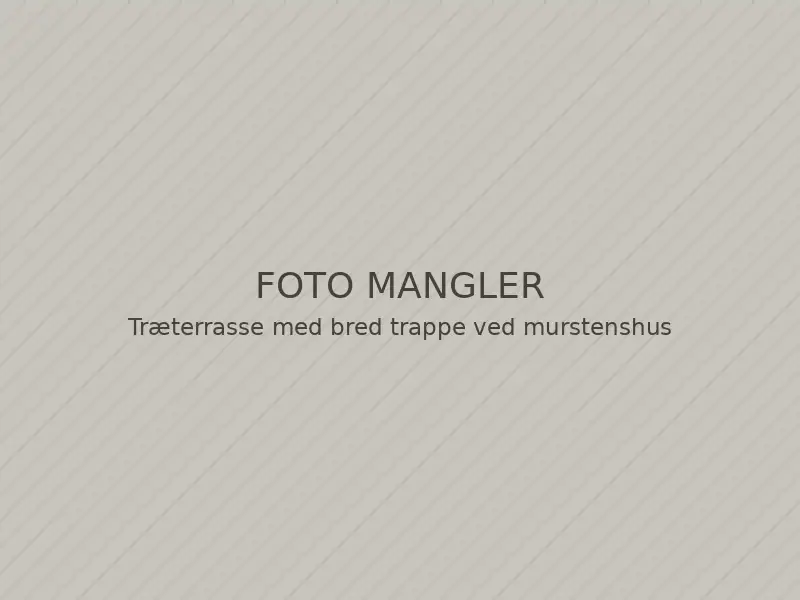
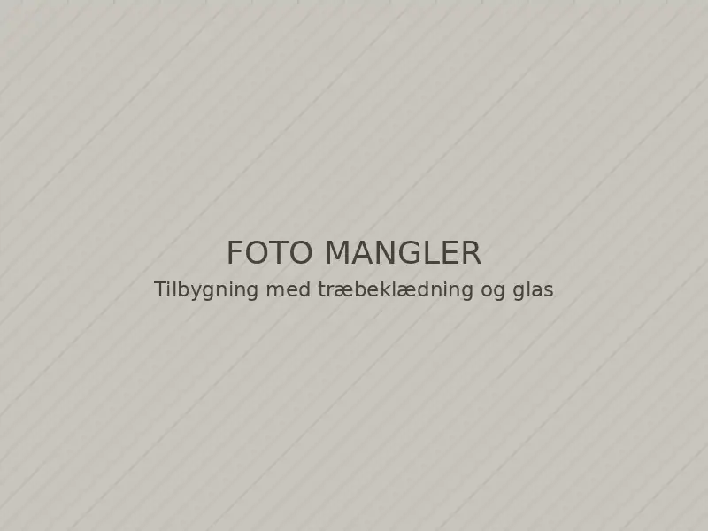
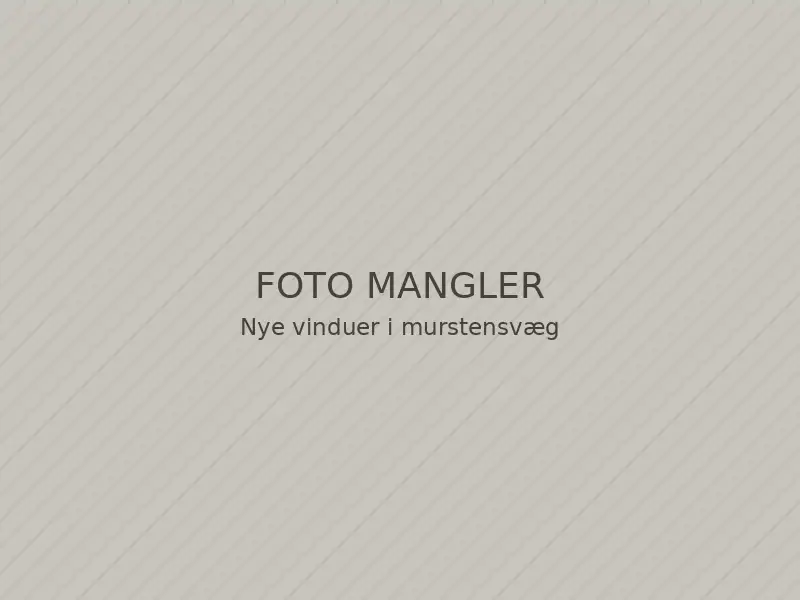
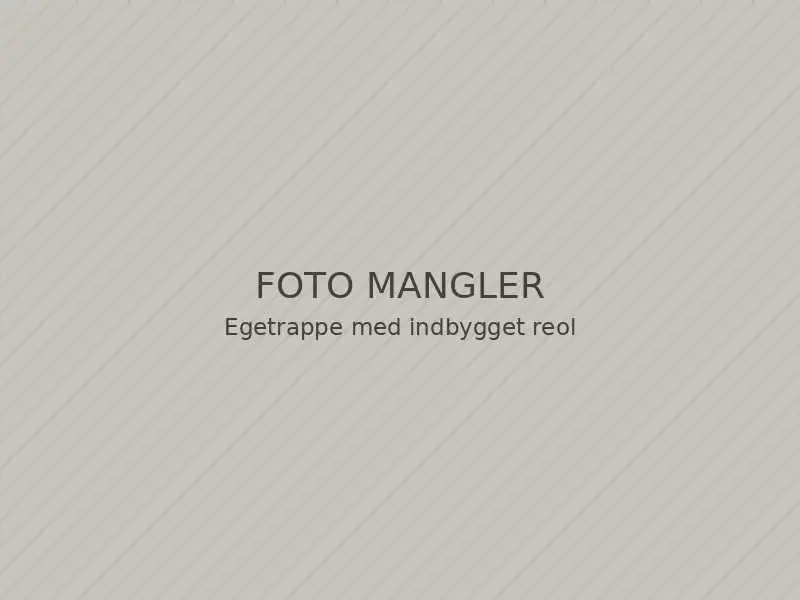
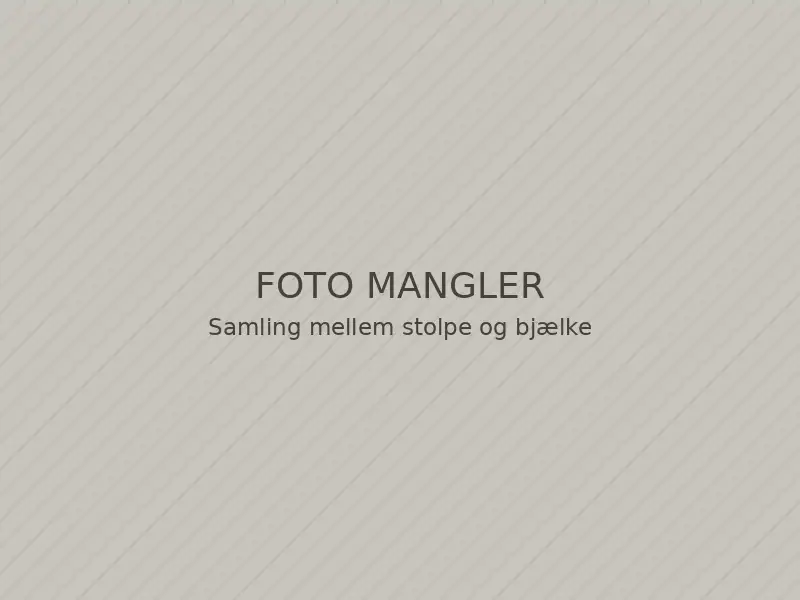
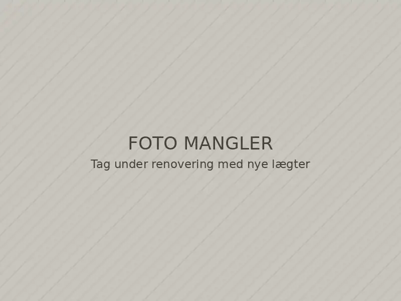
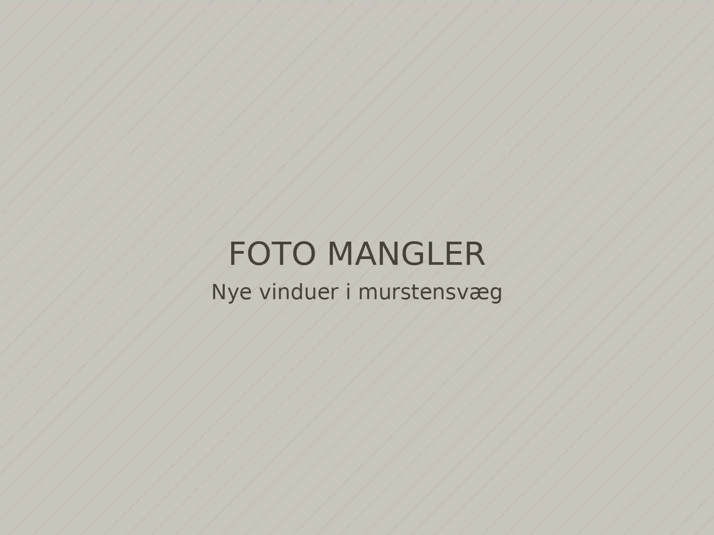

Forside / Projekter
Projekter
Her er eksempler på den slags opgaver, vi løser. Alle projekter og billeder er illustrative eksempler i et fiktivt designkoncept.
-

Terrasse · Illustrativt eksempel Terrasse med bred trappe
Terrasse i hele husets bredde med trappe ned til plænen og skjulte skruer.
-

Tilbygning · Illustrativt eksempel Havestue mod vest
Tilbygning med store glaspartier, lodret træbeklædning og nyt tag.
-

Vinduer · Illustrativt eksempel Nye vinduer i murstenshus
Udskiftning af vinduer med nye fuger, lysninger og indvendige lister.
-

Indvendigt · Illustrativt eksempel Trappe med indbygget reol
Ny trappe til første sal med reol bygget ind under trinene.
-

Terrasse · Illustrativt eksempel Overdækning med synlige bjælker
Overdækning af terrassen med bærende bjælker og tæt tag.
-

Tag · Illustrativt eksempel Nyt tag og efterisolering
Nyt undertag, lægter og tagbelægning samt isolering af loftet.

Har du en lignende opgave?
Skriv kort, hvad du vil have lavet, og send gerne et billede. Vi vender tilbage inden for to hverdage.